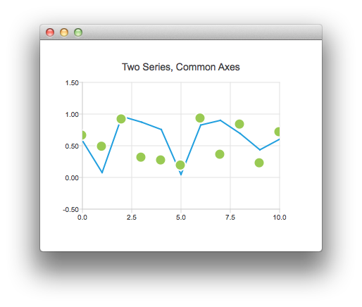
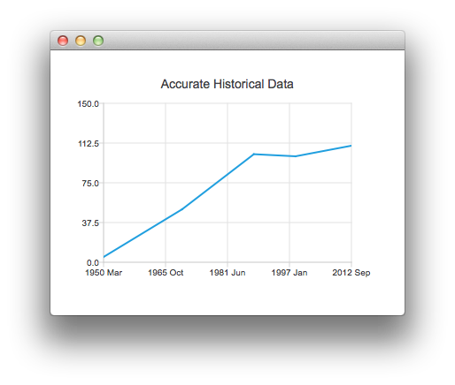
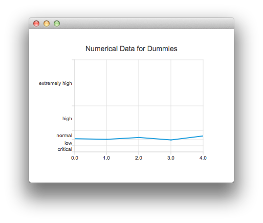

Using Axes with QML
Note: This is part of the Charts with QML Gallery example.
We begin with a chart that has a line series and a scatter series with random data. We then have a graph with two series that share a common axis.

ChartView { title: "Two Series, Common Axes" anchors.fill: parent legend.visible: false antialiasing: true ValueAxis { id: axisX min: 0 max: 10 tickCount: 5 } ValueAxis { id: axisY min: -0.5 max: 1.5 } LineSeries { id: series1 axisX: axisX axisY: axisY } ScatterSeries { id: series2 axisX: axisX axisY: axisY } // Add data dynamically to the series Component.onCompleted: { for (var i = 0; i <= 10; i++) { series1.append(i, Math.random()); series2.append(i, Math.random()); } } }
This chart shows some accurate historical data. It is created by the following snippet that makes use of a DateTimeAxis.

ChartView { id: root title: "Accurate Historical Data" anchors.fill: parent legend.visible: false antialiasing: true LineSeries { axisX: DateTimeAxis { format: "yyyy MMM" tickCount: 5 } axisY: ValueAxis { min: 0 max: 150 } // Please note that month in JavaScript months are zero based, so 2 means March XYPoint { x: root.toMsecsSinceEpoch(new Date(1950, 2, 15)); y: 5 } XYPoint { x: root.toMsecsSinceEpoch(new Date(1970, 0, 1)); y: 50 } XYPoint { x: root.toMsecsSinceEpoch(new Date(1987, 12, 31)); y: 102 } XYPoint { x: root.toMsecsSinceEpoch(new Date(1998, 7, 1)); y: 100 } XYPoint { x: root.toMsecsSinceEpoch(new Date(2012, 8, 2)); y: 110 } } // DateTimeAxis is based on QDateTimes so we must convert our JavaScript dates to // milliseconds since epoch to make them match the DateTimeAxis values function toMsecsSinceEpoch(date) { var msecs = date.getTime(); return msecs; } }
This following chart is created using a CategoryAxis to make the data easier to understand.

ChartView { title: "Numerical Data for Dummies" anchors.fill: parent legend.visible: false antialiasing: true LineSeries { axisY: CategoryAxis { min: 0 max: 30 CategoryRange { label: "critical" endValue: 2 } CategoryRange { label: "low" endValue: 4 } CategoryRange { label: "normal" endValue: 7 } CategoryRange { label: "high" endValue: 15 } CategoryRange { label: "extremely high" endValue: 30 } } XYPoint { x: 0; y: 4.3 } XYPoint { x: 1; y: 4.1 } XYPoint { x: 2; y: 4.7 } XYPoint { x: 3; y: 3.9 } XYPoint { x: 4; y: 5.2 } } }